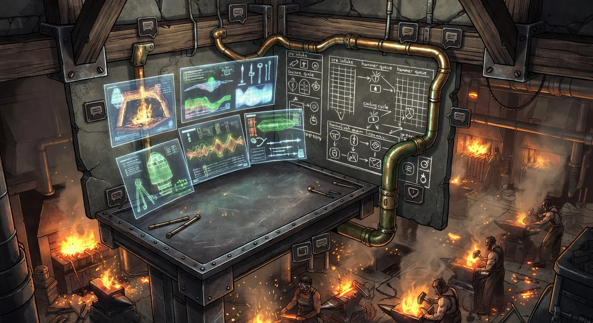

The Shop Tour
Four stations. One workshop.
Every SDLC phase.
Plan Forge isn't a code generator. It's a whole shop — a complete AI-native SDLC workshop where every phase of the lifecycle has its own station, its own agents, its own gates. Walk through it with us.

Station 1 · Smelt
Raw idea → refined scope contract.
Every plan begins as ore — an idea in Slack, a half-written ticket, a demand from leadership. The Smelt station interviews you with the Specifier agent, extracts the real requirements, surfaces hidden assumptions, and pours out a Scope Contract that the downstream stations can't argue with.
What runs here
- ▸ Specifier agent (Session 1) — structured interview, requirements extraction
- ▸ AI Plan Hardening Runbook — 7 pre-flight checks, forbidden-action declaration
- ▸
/specifyslash command +/harden-plan - ▸ Project Principles + Scope Contract templates
What comes out
A plan file the Forge station can execute slice-by-slice without follow-up questions. No ambiguity, no open-ended "I'll decide later."


Station 2 · Forge
Scope contract → shipped code, slice by slice.
The anvil. Plans are broken into slices and struck one at a time. Each slice is a commit, each commit has its own gate: build + tests + review. The hammer doesn't swing twice on the same slice unless the gate is green.
What runs here
- ▸
pforge run-plan— autonomous slice execution - ▸ Quorum mode — multi-model consensus for complex slices
- ▸ Slice gates — build, test, lint, architecture review before each commit
- ▸ Cost ledger — multi-model pricing, self-calibrating estimates
- ▸ Auto-escalation — model promotion on slice failure
What comes out
Green tests, green CI, green cost ledger — or an honest stop with a fix-proposal. Never a silent "it compiled, ship it."
Station 3 · Guard
Standing watch over the workshop floor.
The watchtower. LiveGuard scans secrets, env drift, CVE surface, and regression risk — before deploy, after every slice, every hour. Incidents become triaged fix-plans. The pager stays quiet because the tower sees what's coming.
What runs here
- ▸
forge_secret_scan— gitleaks-grade, local, pre-deploy blocking - ▸
forge_drift_report— code-vs-plan drift scoring post-slice - ▸
forge_regression_guard— prevents reintroducing closed bugs - ▸
forge_env_diff— environment variable gap detection - ▸
forge_liveguard_run— composite health check
What comes out
Pre-deploy block on secrets ≥ high, post-slice advisory on drift, recurring-incident escalation, and a fix-proposal attached to every alert — not just "something broke."


Station 4 · Learn
Every strike teaches the next one.
The brain above the bench. Plan Forge remembers every incident, every fix, every review — and feeds it back into the next session as OpenBrain memories, bug-registry entries, testbed findings, and health-DNA trends. The shop gets sharper the longer you run it.
What runs here
- ▸ OpenBrain — persistent memory across sessions, auto-queried by pipeline prompts
- ▸ Bug Registry — native tracking with dashboard timeline + regression-guard hooks
- ▸ Testbed — happy-path scenario runner for release validation
- ▸ Health DNA — long-horizon project-decay fingerprint
- ▸ Forge Intelligence — escalation-chain auto-tuning from historical model performance
What comes out
Tomorrow's plan is colder, faster, and less wrong. Your repo gains institutional memory — one that doesn't quit, forget, or argue.
The Command Desk
One view over the whole shop.
The smith's command desk. The live dashboard at localhost:3100/dashboard gives you every station in one view: slice progress, cost ledger, LiveGuard incidents, memory queue, CI triggers. Telegram, Slack, and Discord all run up the same speaking tube.
What you see
- ▸ FORGE — live slice execution, cost trend, plan status
- ▸ LIVEGUARD — drift, incidents, secret scans, health trend
- ▸ CRUCIBLE — community extensions, tempering scores
- ▸ BUG REGISTRY — open/closed/linked bugs, regression stats
- ▸ TIMELINE / SEARCH / NOTIFICATIONS / WATCHER — system-wide event stream

Ready to run the shop?
Open source. MIT licensed. Works with Copilot, Claude, Cursor, Codex, Gemini, and Windsurf. Install in five minutes, ship your first slice today.
"A blacksmith without a shop is just a man with a hammer."